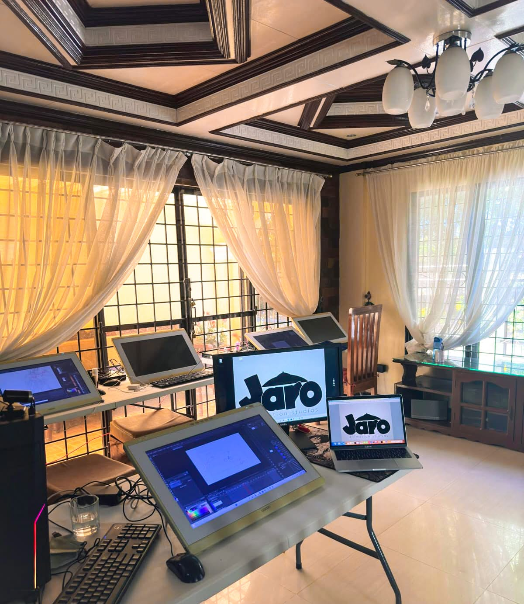
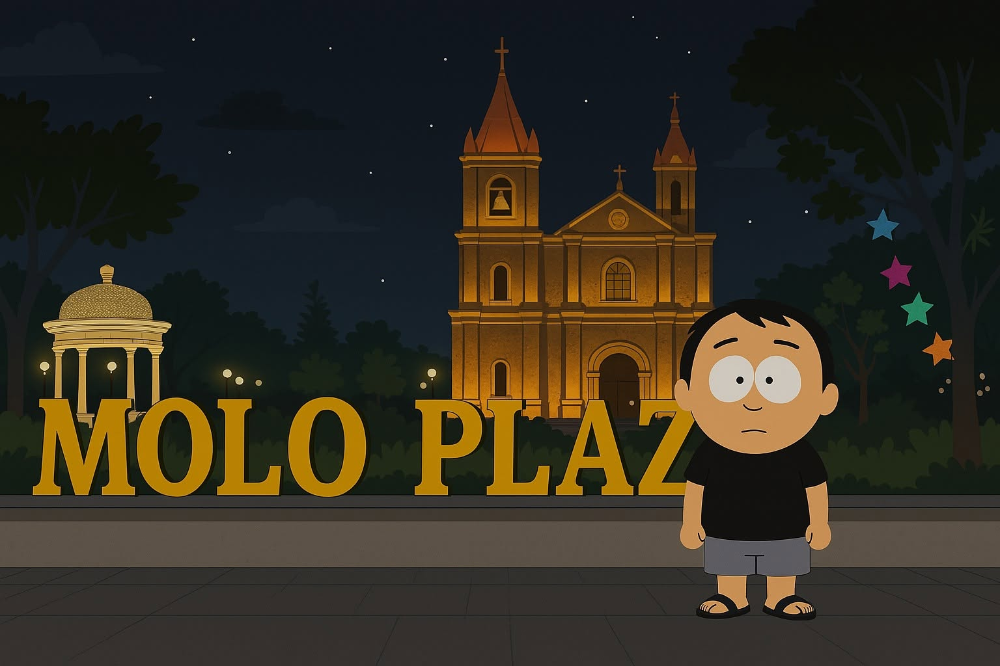
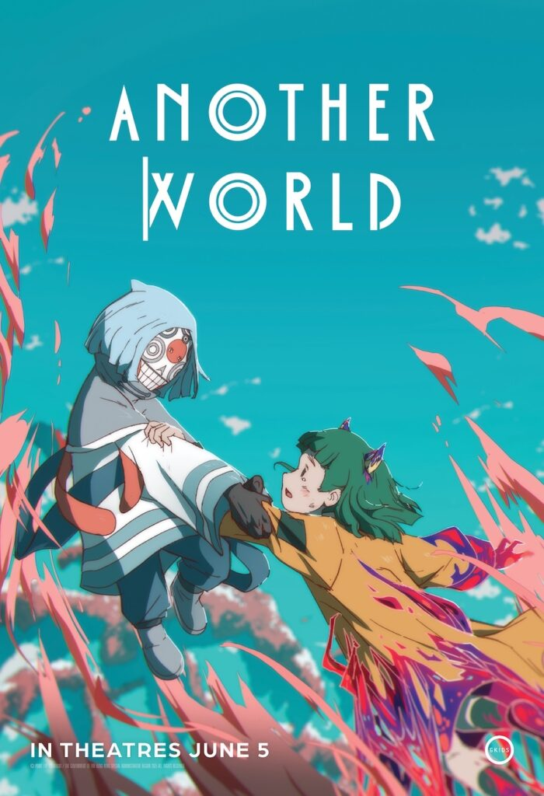
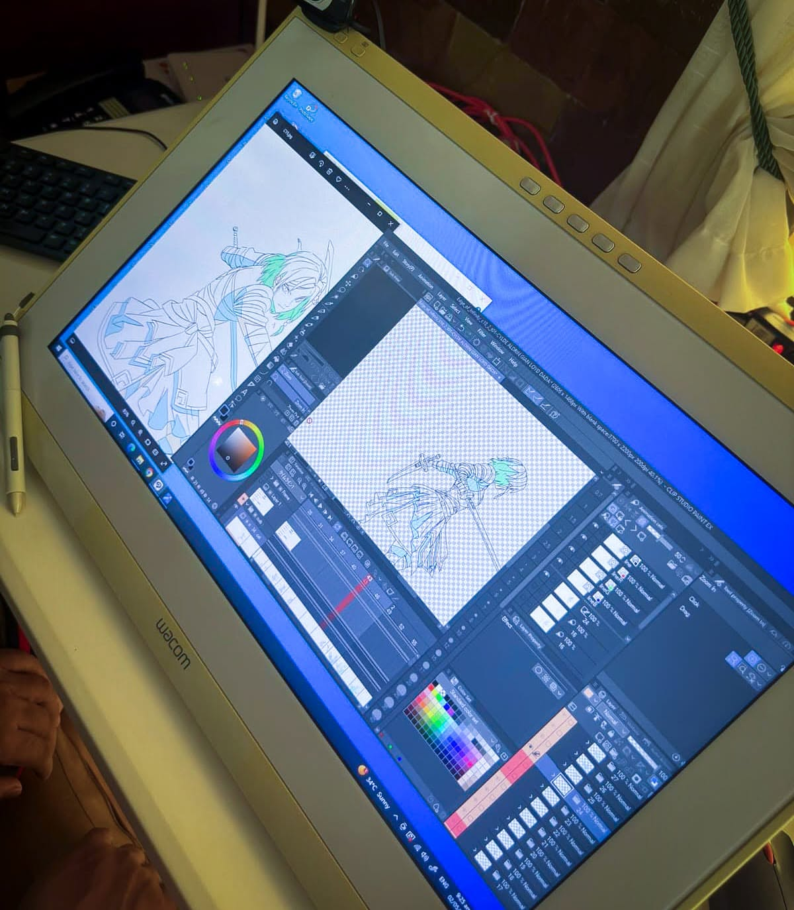

Jaro Animation Studios is an independent, rising boutique animation studio based in the historic district of Jaro, Iloilo City, Philippines. Located in a region deeply rooted in cultural heritage and intellectual history, the studio represents a modern wave of provincial Filipino talent claiming a prominent spot in the global creative landscape.

By operating outside the traditional entertainment capital of Metro Manila, the studio champions regional pride and decentralizes the country's digital art scene through local initiatives like #USWAGILOILO. Jaro Animation Studios bridges the gap between different global artistic styles.

Our core production capabilities are highly versatile. We work with both Western animation and Japanese anime aesthetics, making the studio a flexible partner for multimedia campaigns, animated trailers, promos, layout design, and key animation.

A major pillar of the studio's background is its commitment to localized mentorship and community upskilling. We help transform local visual artists into competitive industry professionals, allowing home-grown Iloilo artists to gain world-class experience without leaving their hometown.
Core values
Regional pride, lifelong craftsmanship, and a community-first approach guide our work.
Vision
To establish Iloilo City as an emerging, sustainable global hub for animation.
Mission
To provide world-class visual artistry and a pathway for provincial talent to reach the global stage.